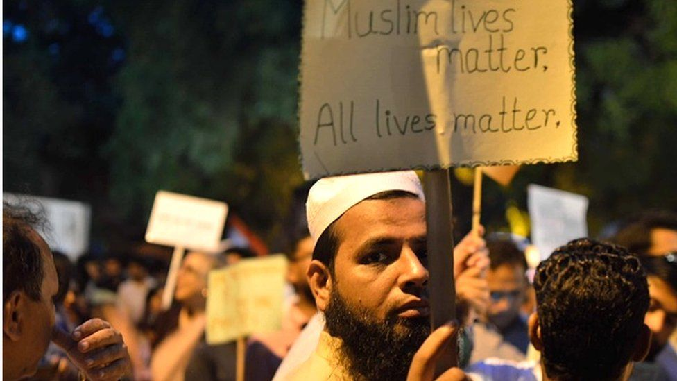

الأذى والإذلال مصير المسلمين على يد المتطرفين الهندوس في الهند
Beaten and humiliated by Hindu mobs for being a Muslim in India
غييتا باندي ، بي بي سي نيوز - دلهي - 2 سبتمبر/ أيلول 2021
By Geeta Pandey , BBC News, Delhi , 2 September 2021

باتت الإعتداءات على المسلمين من قبل الجماعات الهندوسية القومية شائعة في الهند دون أن تلقى سوى القليل من الإدانة من
الحكومة الهندية.
Unprovoked attacks on Muslims by Hindu mobs have become routine in India, but they seem to evoke little condemnation
from the government.
وأظهرت اللقطات المؤثرة سائق الدراجة الهوائية ثلاثية العجلات البالغ من العمر 45 عاما وهو يُقاد عبر شوارع مدينة كانبور
الواقعة في ولاية أوتار براديش الشمالية بينما الابنة الصغيرة تبكي وتتوسل الحشد للتوقف عن ضربه.
Last month, a video that went viral on social media showed a terrified little girl clinging to her Muslim father as
a Hindu mob assaulted him.
The distressing footage showed the 45-year-old rickshaw driver being paraded through the streets of Kanpur, a city
in the northern state of Uttar Pradesh, as his crying daughter begged the mob to stop hitting him.
طلب المعتدون من الضحية أن يهتف "هندوستان زيند آباد" وتعني "تحيا الهند" و "جاي شري رام" التي تعني "النصر للإله رام"
وهي عبارة شعبية تحولت إلى هتاف للقتل من قبل الحشود الهندوسية في السنوات الأخيرة.
His attackers asked him to chant "Hindustan Zindabad" or "Long Live India" and "Jai Shri Ram" or "Victory to Lord
Ram" - a popular greeting that's been turned into a murder cry by Hindu lynch mobs in recent years.
متثلت الضحية لطلبات الغوغاء لكنهم استمروا في ضربه. ولم يتوقف المعتدون عن ضرب الضحية إلا بعد أن وصلت الشرطة وأنقذته
وابنته. تم إطلاق سراح ثلاثة معتدين أُلقي القبض عليهم بكفالة في اليوم التالي.
He complied, but the mob still kept hitting him. The man and his daughter were eventually rescued by the police.
Three men arrested for the attack were freed on bail a day later.
عد بضعة أيام انتشر مقطع فيديو آخر يظهر بائعاً مسلماً يتعرض للصفع والركل واللكم من قبل حشد من الهندوس في مدينة إندور
بولاية ماديا براديش بوسط البلاد.
ويمكن سماع المهاجمين وهم يسيئون معاملة تسليم علي ويطلبون منه الابتعاد عن المناطق الهندوسية مستقبلاً.
A few days later, another viral video surfaced showing a Muslim bangle-seller being slapped, kicked and punched by a
Hindu mob in Indore, a city in the central state of Madhya Pradesh.
The attackers could be heard abusing Tasleem Ali and telling him to stay away from Hindu areas in future.
وفي الشكوى التي قدمها للشرطة لاحقاً قال تسليم علي إنه تعرض "للضرب على أيدي خمسة أو ستة رجال وجهوا له إهانات جماعية
لبيعه الكعك في منطقة ذات غالبية هندوسيه وسلبوا منه ماله وهاتفه وبعض المستندات".
In a police complaint, he later alleged that he had been "beaten by five-six men who hurled communal slurs at him
for selling bangles in a Hindu-dominated area and robbed him of money, his phone and some documents".
كن الغريب في الأمر أنه تم القبض على تسليم علي في اليوم التالي بعد أن اتهمته ابنة أحد المشاركين في الإعتداء والبالغة
من العمر 13 عامًا بالتحرش بها. ونفت عائلة تسليم علي وجيرانه بشدة هذا الاتهام وقالوا إنه من غير المعقول أن يقترف أب
لخمسة أطفال فعلاً كهذا.
But in a strange turn of events, Ali himself was arrested the next day after the 13-year-old daughter of one of his
alleged attackers accused him of molesting her. His family and neighbours have strongly denied the accusation. They
said it was inconceivable that the father of five would do something like that.
ونقلت الصحف الهندية عن شهود عيانالقول إن الضحية تعرض للإعتداء بسبب هويته الدينية وبدا أن الاتهام بالتحرش الجنسي ضده
كان مفبركاً.
And eyewitnesses, quoted in the Indian press, said he was attacked because of his religious identity and the
molestation accusation against him seemed to be an afterthought.
لاعتداءان السابقان ليسا سوى مثالين عن حوادث عنف عديدة ضد المسلمين خلال شهر أغسطس/ آب الماضي. ولم يكن ذلك الشهر هو
الأكثرة قسوة بالنسبة لأكبر أقلية دينية في الهند يبلغ عددها أكثر من 200 مليون نسمة.
The two attacks were among several instances of anti-Muslim violence in August, but the last month by no means was
cruellest for India's biggest religious minority group, with a population of more than 200 million.
قد تم الإبلاغ عن هجمات مماثلة في الأشهر السابقة أيضاً وتصدر العديد منها عناوين الصحف الهندية.
A 'Not in my Name' protest against anti-Muslim killings in India in Delhi, on June 28, 2017
Similar attacks were reported in the preceding months too - and many made headlines.
في مارس / آذار تعرض صبي مسلم يبلغ من العمر 14 عاماً لاعتداء عنيف بسبب دخوله معبدا هندوسيا كي يشرب الماء.
In March, a 14-year-old Muslim boy who had entered a Hindu temple to drink water was violently assaulted
وفي يونيو/ حزيران تعرض بائع للضرب في دلهي بسبب بيعه الفاكهة في منطقة هندوسية.
In June, a vendor was beaten up in Delhi for trying to sell fruit in a Hindu locality
ويقول الصحفي المستقل الذي يوثق الهجمات على المسلمين الهنود على مدى السنوات الثلاث الماضية علي شان جعفري،: "العنف
شائع ومتفش ومقبول تماماً".
"The violence is overwhelming. It's rampant and common and also very acceptable," says Alishan Jafri, a freelance
journalist who's been documenting attacks on Indian Muslims for the past three years.
ويضيف قائلا إنه يصادف "ثلاثة إلى أربعة مقاطع فيديو من هذا القبيل كل يوم" ولكنه قادر على التحقق من واحد أو اثنين منها
فقط وبعدها ينشرها على وسائل التواصل الاجتماعي.
He says he comes across "three-four such videos every day" but is able to verify only one or two which he then
shares on social media.
وتوجد الانقسامات الدينية في الهند منذ فترة طويلة، لكن منتقدي الحكومة يقولون إن العنف ضد المسلمين قد تصاعد منذ عام
2014 في ظل الحكومة القومية الهندوسية برئاسة رئيس الوزراء ناريندرا مودي.
Religious faultlines have existed in India for a long time but, critics say, anti-Muslim violence has risen since
2014 under the Hindu nationalist government of Prime Minister Narendra Modi.
وقال البروفيسور تنوير إعجاز، أستاذ العلوم السياسية في جامعة دلهي، لبي بي سي: "العنف الطائفي ليس ظاهرة حديثة، لكنه
ينمو بالتوافق مع استراتيجيات من هم في السلطة وبالتجييش السياسي".
"Communal violence is not a recent phenomenon, but it grows in sync with the strategies of those in power and
political mobilisation," Prof Tanvir Aeijaz, who teaches politics science at Delhi University, told the BBC.
انعدام الثقة كان موجودا دائما بين القوميات والأديان في الهند، لكن الانقسامات ازدادت حدتها الآن بسبب القومية الدينية
والقومية العرقية".
"The distrust was always there but cleavages have been sharpened now by religious nationalism and
ethno-nationalism."
وخلال فترة ولاية مودي الأولى في السلطة كانت هناك حوادث عديدة تعرض فيها مسلمون للهجوم من قبل ما يسمى "حراس البقر"
بسبب شائعات بأنهم يأكلون لحوم البقر أو أنهم كانوا يحاولون تهريبها، حيث يعتبرها الهندوس مقدسة ولا يجوز ذبحها.
During Mr Modi's first term in power, there were numerous incidents of Muslims being attacked by so-called "cow
vigilantes" over rumours that they had eaten beef, or that they were trying to smuggle cows - an animal many Hindus
consider holy - for slaughter.
لم يتغاضى رئيس الوزراء عن مثل هذه الهجمات لكنه تعرض لانتقادات لعدم إدانتها بسرعة و بالشدة المطلوبة.
The prime minister did not condone such attacks, but was criticised for not condemning them quickly or strongly
enough either.
وقال براكاش جافاديكار، القيادي البارز في حزب بهاراتيا جاناتا، لبي بي سي إن "الحكومة تعتقد أن القتل خارج نطاق القانون
أمر سيء أينما كان، وتطبيق القانون والنظام من اختصاص الدولة وهي مسؤولة عن ذلك".
Prakash Javadekar, a senior BJP leader, told the BBC that "the government believes that lynching is bad, wherever it
happens. But law and order is a state subject and it is their responsibility to deal with it".
واتهم وسائل الإعلام بالتحيز والانتقائية وبالتركيز على الهجمات التي يتعرض لها المسلمون.
He then went on to accuse the media of "biased and selective journalism" by focusing on attacks on Muslims.
وقال: "إذا نظرت إلى البيانات الرسمية ، قتل 160 هندوسياً من بين 200 شخص تم قتلهم خارج القانون. وتم استهداف أشخاص من
جميع الأديان" ، لكنه لم يذكر مصدر هذه البيانات لأن الهند لا تجمع مثل هذه البيانات.
"If you look at official data, there were 160 Hindus among the 200 people who were lynched. People of all faiths
were targeted," he said, but did not give details of where the data could be found. India does not gather such data.
في عام 2019 أفاد أحد مواقع التحقق من الوقائع الذي يحصي "جرائم الكراهية" في الهند أن أكثر من 90 في المئة من الضحايا
في السنوات العشر الماضية كانوا من المسلمين.
In 2019, a fact-checker website that counted "hate crimes" in India reported that more than 90% of victims in the
past 10 years were Muslims.
ولا يزال مقترفو هذه الهجمات بلا عقاب وسط اتهامات بأنهم يتمتعون برعاية سياسية من حزب بهاراتيا جاناتا الذي يتزعمه مودي
إذ قام وزير حكومي سابق بتكريم ثمانية هندوس أدينوا بقتل مسلم.
And the perpetrators of the attacks remain unpunished amid accusations that they enjoy political patronage from Mr
Modi's Bharatiya Janata Party after a government minister garlanded eight Hindus convicted for lynching a Muslim.
وتقول حسيبة أمين، منسقة وسائل التواصل الاجتماعي لحزب المؤتمر المعارض: "أصبحت مثل هذه الهجمات شائعة جدا في الهند
اليوم وفقط بسبب الإفلات من العقاب الذي يتمتع به هؤلاء البلطجية".
"Such attacks have become so common in our country today only and only because of the impunity these thugs enjoy,"
says Hasiba Amin, a social media co-ordinator for the opposition Congress party.
"اليوم أصبحت الكراهية طاغية. وبات الإعتداء على المسلمين أمراً مستحباً. كما يكافأ دعاة الكراهية على أفعالهم".
"Today hate has gone mainstream. It is cool to go attack Muslims. The hate mongers are also rewarded for their
actions."
ويقول المنتقدون إنه منذ عودة مودي إلى السلطة لولاية ثانية في عام 2019 ، اتسع نطاق العنف ضد المسلمين.
Critics say since Mr Modi's return to power for a second term in 2019, the anti-Muslim violence has expanded in its
scope.
في بعض الأحيان، لا يكون العنف جسديا بل يتخذ شكلاً أكثر تمويهاً وخبثا ويهدف إلى تشويه سمعة الأقلية المسلمة. فعلى سبيل
المثال في العام الماضي عندما سيطرت جائحة كورونا على الهند، اتهم القادة الهندوس بمن فيهم مودي ومسؤولي حزبه الرجال
المسلمين الذين حضروا تجمعا دينيا في دلهي بممارسة "جهاد كورونا" عبر ممارسة سلوكيات من شأنها أن تساعد في انتشار
الفيروس.
Sometimes, the violence is not even physical and takes a more subtle, insidious form that appears aimed at vilifying
and demonising the minority community. For example:
Last year, as Covid-19 began to take hold of India, Hindu leaders, including Mr Modi's ministers and party
colleagues, accused Muslim men, who had attended a religious gathering in Delhi, of "corona jihad" by indulging in
behaviour that would spread the virus
ثم تبع ذلك شائعة "جهاد خبز روتي" والتي جاء فيها أن الطهاة المسلمين الذين يخبزون خبر روتي الهندي يبصقون على الخبز
لنشر الفيروس بين الهندوس.
Then followed "roti jihad" which included wild allegations that Muslim cooks were spitting on roti - handmade bread
- to spread the virus to Hindus
وفي الأشهر الأخيرة اعتمدت عدة ولايات قوانين للحد مما يسمى بـ "جهاد الحب"، وهو مصطلح معادي للإسلام تستخدمه الجماعات
الهندوسية للإشارة إلى أن الرجال المسلمين يتصيدون النساء الهندوسيات لتحويلهن إلى الإسلام من خلال الزواج.
In recent months, several states have introduced laws to curb "love jihad" - an Islamophobic term fringe Hindu
groups use to imply that Muslim men prey on Hindu women to convert them to Islam through marriage.
وتُستخدم القوانين لمضايقة وسجن الرجال المسلمين المتزوجين من نساء هندوسيات. في ديسمبر / كانون الأول الماضي تصدرت محنة
امرأة هندوسية حامل أجبرت على الإنفصال عن زوجها المسلم عناوين الصحف بعد أن أجهضت جنينها.
The laws are being used to harass and jail Muslim men in interfaith relations with Hindu women. Last December, the
plight of a pregnant Hindu woman, who was forcibly separated from her Muslim husband, made headlines when she
suffered a miscarriage.
كما أن النساء المسلمات لم يسلمن من هذه الإعتداءات والإساءات، ففي يوليو / تموز اكتشفت العشرات منهن أنهن معروضات
"للبيع" عبر الإنترنت. في مايو/ أيار الماضي تم عرض العديد منهن بما في ذلك السيدة أمين من حزب المؤتمر المعارض في
"مزاد" وهمي على الإنترنت.
Muslim women haven't been spared either - in July, dozens of them found they had been put up "for sale" online. In
May, many of them, including Ms Amin of the Congress party, were offered in a mock online "auction".
وفي الشهر الماضي هتف المشاركون في تجمع نظمه زعيم سابق لحزب بهاراتيا جاناتا في دلهي بشعارات تدعو إلى قتل المسلمين.
And last month, participants at a rally, organised by a former BJP leader in Delhi, shouted slogans calling for
Muslims to be killed.
ويشير البروفيسور إعجاز إلى أن الاعتدءات على الطبقة العاملة المسلمة مثل الخياطين وبائعي الفاكهة والكهربائيين
والسباكين وبائعي الكعك هي أيضاً محاولة للسيطرة على الاقتصاد والوظائف من خلال القومية الدينية.
Prof Aeijaz says the attack on working class Muslims, such as tailors, fruit vendors, electricians, plumbers and
bangle sellers, is also an attempt to take control of the political economy and jobs through religious nationalism.
"لقد تعمق الانقسام الديني، وتعمقت الريبة. وتهدف الكراهية أيضا إلى تحقيق الربح عبر جعل المسلم العدو الآخر".
"The religious divide has deepened. The distrust has deepened. But the hate is also for profit. The idea it to make
Muslims the other, the enemy.
"عملية خلق العدو تجري من خلال نشر فكرة أنه إذا لم ندمر الآخر فسيدمرنا. لذلك تُؤجج مشاعر الكراهية، ويُخلق الخوف،
والعنف جزء من الرواية الكبرى."
"The process of creating the other is by propagating the idea that if we don't destroy the other, we will be
destroyed. So you stoke hate, create fear, and violence is part of this larger narrative."
لكن القومية الدينية كما يقول البروفيسور إعجاز هي فكرة خطيرة يمكن أن تؤدي إلى العنف الطائفي.
But religious nationalism, Prof Aeijaz says, is a dangerous idea that can lead to sectarian violence.
"السلطة السياسية الحاكمة في ديمقراطية برلمانية هي التي تتحمل المسؤولية. فإلى متى يمكن أن تتجاهل ذلك؟".
"The buck stops with the political executive in a parliamentary democracy. How long can they look the other way?"